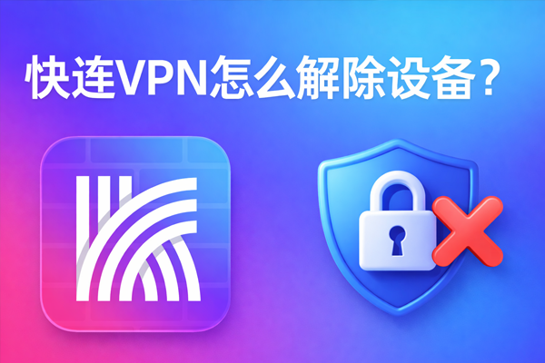
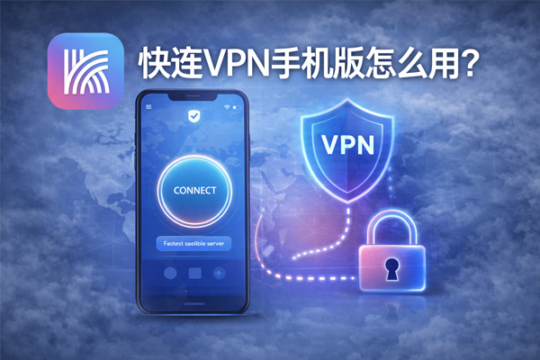
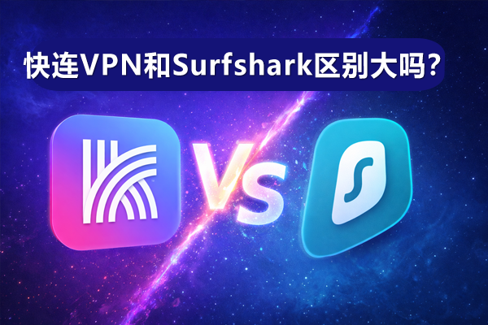

博客列表

快连VPN怎么解绑设备？
解绑设备这件事，很多人不是不会点按钮，而是不确定“在哪解绑最稳”“解绑后会不会影响账号”“设备太多登不进去该怎么处理”。我这边用手机端和电脑端都走了一遍流程，发现快连VPN的解绑逻辑其实很清楚：你只要进入设备管理页，找到要解绑的那台设备，确认后移除即可。
2026年3月31日
快连VPN的收费方式是什么？
快连VPN采用基础功能免费、部分节点和高级功能收费的方式。用户可选择购买VIP会员，按月、季度或年度订阅，解锁更多高速专线节点、更稳定的连接和不限流量服务。价格根据订阅周期不同而有所变化，支持微信、支付宝等多种支付方式。
2026年3月28日
快连VPN是否支持静态IP？
快连VPN目前主要提供动态IP服务，大多数用户每次连接时会分配不同的IP地址。根据公开信息，它并未明确提供静态IP选项，因此不适用于需要固定IP的用户。如果你有静态IP需求，建议选择支持该功能的专业VPN服务。
2026年3月27日

快连VPN手机版怎么用？
使用快连VPN手机版非常简单。首先在应用商店下载并安装快连VPN，注册或登录账号后，打开应用选择一个服务器节点，点击“连接”按钮即可开始使用。你也可以在设置中开启自动连接、选择协议等功能，保护手机上网安全与隐私。
2026年3月25日
Google Play能下载快连VPN吗？
是的，快连VPN可以帮助用户科学上网。它通过连接海外服务器绕过地域限制，访问被屏蔽的网站和服务。无论是浏览外部网站、使用流媒体服务，还是进行其他网络活动，快连VPN都能提供稳定和高速的连接，确保用户能够自由、安全地上网。
2026年3月24日

快连VPN和Surfshark区别大吗？
快连VPN和Surfshark的主要区别在于性能、服务器分布和价格。快连VPN主打国内网络优化，适合中国用户，提供较快的连接速度。Surfshark则全球服务器覆盖更广，支持无限设备连接，提供更多的安全功能，如多跳VPN、广告拦截等。两者在隐私保护方面都表现不错，但Surfshark的性价比和功能更丰富。
2026年3月22日